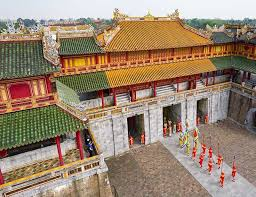
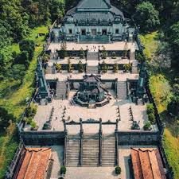
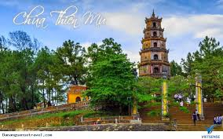
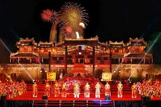
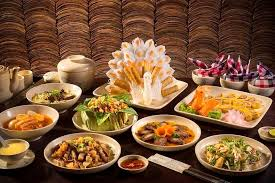

Huế - kinh đô cuối cùng của Việt Nam, nơi lưu giữ những giá trị văn hóa, kiến trúc và tinh thần đặc sắc nhất của dân tộc. Với quần thể di tích Cố đô được UNESCO công nhận là Di sản Văn hóa Thế giới, Huế là điểm đến không thể bỏ qua cho những ai yêu thích lịch sử và văn hóa truyền thống.
1. Đại Nội Huế - Trái tim di sản
Giờ mở cửa: 7h00-17h30 hàng ngày
Giá vé: 150.000đ/người lớn
Điểm nổi bật:
- Ngọ Môn - Cổng chính uy nghiêm của Hoàng thành
- Điện Thái Hòa - nơi thiết triều của các vua Nguyễn
- Tử Cấm Thành - khu vực sinh hoạt của hoàng gia
- Thế Miếu - nơi thờ các vị vua triều Nguyễn
Mẹo tham quan: Thuê hướng dẫn viên hoặc sử dụng audio guide để hiểu sâu hơn về lịch sử, nên đi sớm để tránh nắng và đông khách.
2. Lăng tẩm các vua Nguyễn
Lăng Khải Định (Ứng Lăng)
• Phong cách kiến trúc Đông-Tây độc đáo
• Nổi bật với nghệ thuật khảm sành sứ tinh xảo
Lăng Tự Đức (Khiêm Lăng)
• Kiến trúc hài hòa với thiên nhiên
• Có hồ sen thơ mộng và nhà nghỉ của vua
Lăng Minh Mạng (Hiếu Lăng)
• Quy mô lớn nhất trong các lăng tẩm
• Kiến trúc đối xứng nghiêm ngặt theo phong thủy
Combo vé tham quan: 280.000đ bao gồm 3 lăng (Khải Định, Tự Đức, Minh Mạng)
3. Chùa Thiên Mụ - Biểu tượng tâm linh
Địa điểm: Đồi Hà Khê, cách trung tâm thành phố 5km
Đặc điểm nổi bật:
- Tháp Phước Duyên 7 tầng cao 21m
- Chiếc xe Austin của Hòa thượng Thích Quảng Đức
- Quả chuông Đại Hồng Chung nặng hơn 2 tấn
Trải nghiệm: Nghe tiếng chuông chùa lúc hoàng hôn, ngắm toàn cảnh sông Hương từ trên cao
4. Nhã nhạc cung đình Huế - Di sản phi vật thể
Địa điểm biểu diễn: Duyệt Thị Đường (trong Đại Nội) hoặc nhà hát Hoàng Cung
Giờ biểu diễn: 10h00, 15h00 hàng ngày (có thể thay đổi theo mùa)
Giá vé: 100.000-150.000đ/người
Chương trình tiêu biểu:
- Múa cung đình "Tam tinh chúc thọ"
- Hòa tấu nhạc cụ dân tộc
- Trích đoạn tuồng cung đình
Lưu ý: Nên đặt vé trước vào mùa cao điểm, giữ trật tự trong khi xem biểu diễn
5. Ẩm thực cung đình Huế
Cơm cung đình
• Thường có 12 món mặn và 8 món ngọt
• Địa điểm thưởng thức: Nhà hàng Cung đình, Tịnh Gia Viên
Bánh Huế
• Bánh bèo, bánh nậm, bánh lọc
• Quán ngon: Bánh bèo Bà Đỏ, Bánh nậm Bà Hiền
Chè Huế
• Chè hạt sen, chè bắp, chè khoai tía
• Địa chỉ: Chè Hẻm (đường Nguyễn Công Trứ)
Kinh nghiệm tham quan
- Thời điểm lý tưởng: Tháng 1-4 (trời mát, ít mưa), tránh tháng 9-11 (mùa mưa bão)
- Di chuyển: Thuê xe máy (120.000-150.000đ/ngày) hoặc đi taxi, xe điện
- Trang phục: Mặc kín đáo khi vào di tích, chùa chiền
- Combo tiết kiệm: Mua vé combo 3 ngày tham quan tất cả điểm di tích với giá 500.000đ
- Hướng dẫn viên: Thuê HDV tại các điểm di tích (300.000-500.000đ/tour)
Hành trình khám phá di sản văn hóa thế giới tại Huế sẽ đưa bạn ngược dòng thời gian về với một giai đoạn lịch sử vàng son của dân tộc. Từ kiến trúc độc đáo, nghệ thuật tinh hoa đến ẩm thực cung đình, mỗi trải nghiệm ở Huế đều mang đậm dấu ấn của một thời đại đã qua nhưng vẫn sống mãi với thời gian.